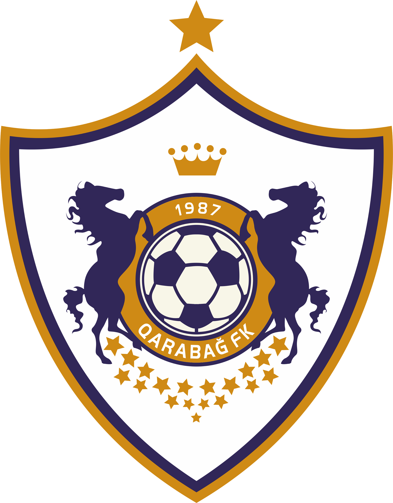

Qarabağ FK — Azərbaycanın Ağdam şəhərini təmsil edən peşəkar futbol klubu.
 1951-ci il tarixində, Ağdam şəhərində "Məhsul" idman cəmiyyətinin futbol komandası yaradılmaqla klubun əsası qoyulub.
Klub daimi olaraq "Qarabağ" adlanana yəni 1987-ci ilə kimi, "Məhsul", "Şəfəq" və "Kooperator" olmaqla üç fərqli ad ilə çıxış etmişdir.[5] 1993-ci ilin 23 iyul tarixində Ermənistan Silahlı Qüvvələrinin Ağdam şəhərini işğal etdikdən sonra Qarabağ ev oyunlarını Ağdam şəhərindən uzaqda yerləşən stadionlarda keçirir.
"Qarabağ" 1992-ci ildən Azərbaycan Premyer Liqasında mübarizə aparır. "Qarabağ" tarixində 9 dəfə Azərbaycan Premyer Liqasının Çempionu olmuşdur. "Qarabağ" eyni ildə həm ölkə çempionu olan, həmdə ki ölkə kubokunu qazanaraq qızıl dubl edən ilk Azərbaycan klubudur.
"Qarabağ" avrokuboklarda mərhələ keçən ilk[6], Çempionlar liqasının qrup mərhələsinə vəsiqə qazanan ilk və yeganə, avrokuboklarda qrup mərhələsini keçərək play-offa yüksələn ilk və yeganə Azərbaycan klubudur.
Tarixi
1950-ci illər
Klubun yaranma tarixi 1950-ci illərin əvvəllərinə təsadüf edir. Belə ki, 1951-ci ildə Ağdam şəhər stadionunun tikintisi başa çatdıqdan sonra klubun da peşəkar bir idman təşkilatı kimi formalaşdırılması sahəsində ciddi işlər görüldü.
1960-cı illər
Yarandığı gündən sonra bir müddət "Məhsul" adı ilə çıxış edən "Qarabağ" ilk dəfə 1966-cı ildə Azərbaycan SSR çempionatında iştirak etmişdir. Həmin il çempionatı 4-cü yerdə başa vuran "Qarabağ" 4 il ardıcıl olaraq ölkə birinciliyində mübarizə apardı. Bu illər ərzində ən yaxşı nəticəni 1968-ci ildə 2-ci yeri tutmaqla qazandı. Lakin 1968-ci ildən sonra baxımsızlıq üzündən Ağdam uzun müddət ölkə çempionatlarında təmsil olunmadı.
1970–1980-ci illər
1977-ci ildə "Qarabağ" yenidən "Şəfəq" adı ilə bərpa edildi. Elə həmin il "Şəfəq" Azərbaycan SSR çempionatının 2-ci dəstəsində yarışdı. "Şəfəq" 1982-ci ilə qədər Ağdam futbolunun yeganə təmsilçisi oldu. 1982-ci ildən 1987-ci ilə qədər isə klub "Kooperator" adı ilə yarışlara qatıldı. "Qarabağ" ilk dəfə Azərbaycan SSR çempionu adına 1988-ci ildə – Azərbaycan keçmiş SSRİ-nin tərkibində olarkən layiq görüldü. Həmin çempionluqdan sonra "Qarabağ" SSRİ çempionatının 2-ci dəstəsinə vəsiqə qazandı. 1989-cu ildə "Qarabağ" SSRİ çempionatının 9-cu zonasında yarışdı[7]. 1990-cı ildə SSRİ çempionatının 2-ci dəstəsinin zona yarışlarında dəyişiklik edildiyindən "Qarabağ" Azərbaycan SSR çempionatının zona yarışlarında iştirak etmək məcburiyyətində qaldı.
1990-cı illər
1990-cı illərin əvvəlləri
1991-ci ildə SSRİ dağılandan sonra Azərbaycan Respublikasının müstəqil futbol çempionatı təşkil olundu. "Qarabağ" Azərbaycan çempionatının bütün mövsümlərində iştirak edən 2 komandadan biridir(Neftçi PFK ilə yanaşı). Təbii ki, müstəqillik illərində "Qarabağ"ın ağır günləri də az olmayıb. Azərbaycan tarixinin ən qara günlərdən biri olan Ağdam şəhərinin işğalı günü (23 iyul 1993-cü il) "Qarabağ" komandasının tarixində də ən qara gündür – həmin tarixdən etibarən komanda "qaçqın klub" kimi fəaliyyət göstərir.
Qeyd edək ki, 1992–1993-cü illərdə rəqiblərini Ağdamda qəbul edən "Qarabağ" burada 28 oyun keçirib. "Qarabağ" Ağdamda keçirdiyi son 22 matçda qalib gəlib. Əyalət təmsilçisinin evdə son məğlubiyyətindən isə daha uzun 27 oyunluq seriya keçir. Maraqlıdır ki, "Qarabağ"ın Ağdamda uduzduğu yeganə oyun onların müstəqilik tarixindəki ilk qarşılaşması olub. Və məğlubiyyətlə başlayan tarix qələbə seriyası ilə davam edib
1990-cı illərin sonları
XX əsrin son illərində klub maddi sıxıntılardan ciddi əziyyət çəkirdi. Məhz bu səbəbdən 1998–2001-ci illərdə ölkə çempionatının güclülər dəstəsində zəif nəticə göstərdi. Üstəlik maddi vəziyyət klubun aparıcı futbolçularının da "Qarabağ"ı tərk etməsinə gətirib çıxartdı. Bütün bunlara baxmayaraq belə bir çətin dövrdə "Qarabağ" Avrokuboklarda mübarizə aparmışdır. Azərbaycan klublarından ilk dəfə mərhələ adlayan "Qarabağ"ın uğuru da məhz bu dövrə təsadüf edir. İsrailin Makkabi Hayfa klubu ilə baş tutmuş oyunların nəticəsində klub qələbə qazanaraq mərhələ adlamışdır. Azərbaycan futbolunun tarixində ilk dəfə olaraq Azərbaycana "böyük beşlik" təmsilçisi gəlmişdir. Bu Fransanın Monpelye klubu idi.
2000-ci illər
XXI əsrin əvvəlində klub maddi problemlərlə üz-üzə qaldı. Bu problemlər 2001-ci ildə Azərbaycanda fəaliyyət göstərən ən böyük holdinqlərdən biri olan "Azərsun" şirkətinin komandanı sponsorluğa götürməsindən sonra həll olundu. "Azərsun" Holdinq şirkəti "Qarabağ"ın inkişafı üçün əməli işə girişdi. Şirkətin prezidenti Abdulbari Gözəlın bilavasitə şəxsi köməkliyi ilə komandanın maddi problemləri həll olundu. İmkansızlıq ucbatından digər klublara keçmiş eks-qarabağlılar heyətə qaytarıldı və həmin dövrdən klub "Qarabağ-Azərsun" adı ilə çıxış etməyə başladı. Maddi vəziyyətin düzəlməsi klubun nəticələrinə də təsir göstərdi. 2001-ci ildə "Qarabağ-Azərsun" ölkə çempionatında 9-cu yeri tutsa da qarşıdakı mövsümə hazırlıq işləri ciddi gedirdi və iddiası böyük olan klubun qarşısına ən yüksək yerləri tutmaq vəzifəsi qoyulmuşdu. Lakin həmin dövrdə Azərbaycan futbolunda baş verən böhran səbəbindən ölkədə 2002–2003-cü ildəki çempionat yarımçıq dayandırıldığı üçün qarşıya qoyulan məqsədə nail olmaq mümkün olmadı. Azərbaycan futbolundakı böhran başa çatdıqdan sonra, 2003-cü ildə "Qarabağ-Azərsun"un rəhbər strukturunda bir sıra dəyişikliklər aparıldı və Tahir Gözəl komandanın vitse-prezidenti təyin edildi. Tahir Gözəlin kluba gəlişindən sonra "Qarabağ"ın tarixində sanki yeni səhifə açıldı. Komandanın ölkə çempionatında uğur qazanması üçün bütün imkanlar səfərbər edildi. Və məhz bu səylərin nəticəsi idi ki, 2003–2004-cü il mövsümündə "Qarabağ" uzun fasilədən sonra yenidən Azərbaycan çempionatının mükafatçıları sırasında yer aldı və birincilikdə ilk dəfə bürünc medalları qazandı. 2022-ci ilin payızında klub ölkə çempionatında 10, bu mövsüm beş, keçmiş mövsümdə isə beş dəfə ardıcıl qalib gələn ilk Azərbaycan komandası kimi rekord vurdu.
"Qarabağ"ın rəhbərliyi 2004–2005-ci il mövsümündə İsveçdə yaşayan təcrübəli məşqçi İqor Ponomaryovu baş məşqçi postuna təyin etdi. Bundan sonra qısa zamanda Azərbaycanın müxtəlif yaş qruplarına aid yığma komandalarının üzvü olan bir sıra futbolçular heyətə cəlb olundu. Tahir Gözəlin təşəbbüsü ilə 2004-cü ildə "Qarabağ"ın tarixi adı özünə qaytarıldı və komanda yenidən bu adla adlandırılmağa başlandı. Bundan başqa Tahir bəy klub üçün yeni loqotip də hazırlatdırdı. İngiltərədə dizaynerlər tərəfindən hazırlanan bu loqotipdə "Qarabağ"ın simvolu olan Qarabağ atları təsvir olunub. Loqotipi bundan başqa futbola aid müxtəlif atributlar bəzəyir.